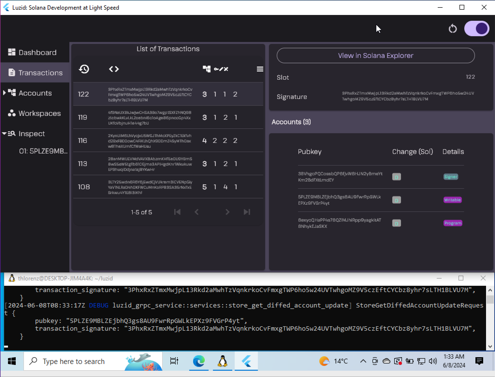

🎉 A more modular Luzid!
Table of Contents
As some of you may know I joined MagicBlock in order to be able to continue Luzid development and keep new releases coming while helping them provide the community with the tools needed to build FOCGs (Fully On Chain Games) on Solana.
MagicBlock will support Luzid going forward as part of their open source tooling provided to the entire Solana community.
Modularity to Democratize Tooling
MagicBlock also wants to make these tools accessible to everyone and therefore decided to make Luzid available to Windows developers as well as on Linux and MacOS were it was already supported.
In order to do that we modularized Luzid into a backend which currently embeds the Solana validator and a frontend which attaches to it in order to provide a convenient UI.
On Windows that backend can be run inside the WSL (Windows Subsystem for Linux) and the frontend runs natively on Windows.
The other use case that is now possible is to deploy the Luzid backend remotely and connect the UI running locally.
Installing the new Version
Follow the release notes for either release:
If you run into any issues please post them inside the
🪲 ︱luzid-issues channel in the MagicBlock Discord.
Coming up Shortly
MagicBlock wants to make all types of games and applications possible on Solana even if they require thousands of transactions processed blazingly fast and state changes to be reflected in real time.
Therefore a big part of my time at MagicBlock is spent building a low latency validator.
This validator will be bundled with the next version of Luzid and boy is the Solana developer community in for a treat! Luzid will naturally inherit the improved performance of this MagicBlock validator and testing your Solana programs locally will be incredibly fast thus shortening the feedback loop even further.
And when I say "incredibly fast" I literally mean incredibly fast, but you'll have to see it to for your self 🔜